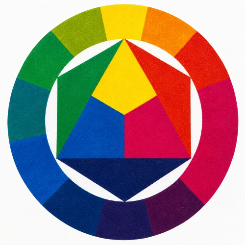

About CMYKForge
Building a better workflow for full-spectrum color FDM printing.
CMYKForge is built around a simple belief: color 3D printing should be easier to understand, easier to preview, and easier to improve.
Today, image-based color FDM printing often depends on trial and error. Loaded filament colors, slicer behavior, material translucency, layer thickness, printer calibration, and export settings can all change the final result. CMYKForge brings those decisions into one clearer workflow.
The goal is to help creators move from a flat image to a color-aware 3D printable model using CMYK-style material planning, filament profiles, model generation, preview tools, printability checks, and slicer-compatible export.
CMYKForge Standard is the first step in that vision: a local-first, non-AI version focused on the core workflow. Future versions may add optional AI assistance, deeper calibration tools, and professional workflow features, but the foundation remains the same — give creators more control over color before the print begins.
Image
Start with a photo, artwork, logo, or design.
Color
Plan a CMYK-style material strategy.
Model
Generate color-aware layered geometry.
Export
Prepare slicer-compatible files.
Our Mission
CMYKForge's mission is to make full-spectrum color FDM printing more predictable, more practical, and more accessible. The platform helps creators prepare image-based prints with better color planning, clearer previews, and stronger export workflows.
Why CMYKForge Exists
Color FDM printing has huge potential, but the workflow can still feel disconnected. Images, filament choices, slicer settings, and printed results often do not line up cleanly. CMYKForge connects those steps into a more intentional process.
Less Guesswork
CMYKForge helps you plan color before exporting instead of relying only on trial-and-error testing.
More Control
The workflow focuses on image analysis, CMYK-style material planning, filament profiles, and preview tools.
Real Print Workflows
CMYKForge supports slicer-compatible exports and practical multi-material FDM printing.
About the Creator
Built from a real gap in the color 3D printing workflow.
CMYKForge began as an attempt to solve a problem that existing color FDM workflows still leave largely unresolved: turning an image into a color-aware printable model without depending entirely on manual guesswork.
There are tools for slicing, multi-material assignment, lithophanes, and image-based reliefs, but very few creator-focused platforms bring image analysis, CMYK and CMYKW material planning, filament behavior, model generation, previewing, printability, and export into one connected workflow.
CMYKForge is founder-built and developed through hands-on testing with real printers, slicers, filaments, generated models, and physical prints. The project is guided by four priorities: print quality, color accuracy, reliability, and practical usability.
The goal is not simply to add more features. The goal is to build the focused color-printing platform that this workflow has been missing.


The Vision
CMYKForge is not just a file generator. It is a color-focused workflow for creators who want to push multi-material FDM printing further. The long-term vision includes calibration systems, filament profile management, advanced preview simulation, slicer interoperability, optional AI guidance, and tools for both beginner and professional users.
AI Is Optional
CMYKForge is not built around requiring AI. CMYKForge Standard is the local-first, non-AI version of the product. Future AI tools may be offered separately to assist with calibration, color guidance, printability, and workflow recommendations, but the core CMYKForge workflow is designed to stand on its own.
AI Roadmap
CMYKForge Standard is the non-AI foundation. Future versions are planned to add optional AI assistance and professional tools while keeping the core color workflow useful on its own.
CMYKForge Standard
The local-first, non-AI core color workflow. No cloud AI or local AI required.
Local AI
Optional local AI assistance for color guidance and workflow suggestions.
Local AI Plus
Deeper optional local AI optimization and print guidance.
Business
Professional workflow, profile management, and multi-project tools.
Cloud AI
A possible optional cloud-assisted analysis path. Not part of Standard.
Still in Development
CMYKForge is currently in development. Features, workflows, export behavior, compatibility, and availability may change as the platform improves. Early beta feedback will help shape the product before wider release.
CMYKForge began as an attempt to solve a real problem in color 3D printing: turning images into printable color models without depending entirely on guesswork. The project is built with a focus on print quality, color accuracy, reliability, and practical workflows for real multi-material printers.
Start with CMYKForge Standard
CMYKForge Standard is the first version of the CMYKForge product family, focused on the core local-first workflow for image-based color 3D printing.